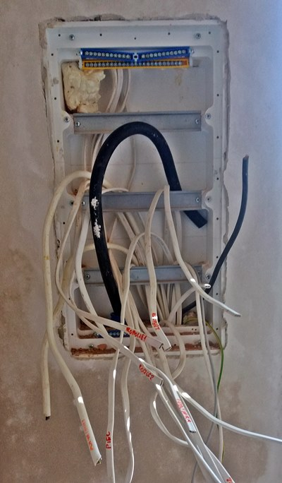
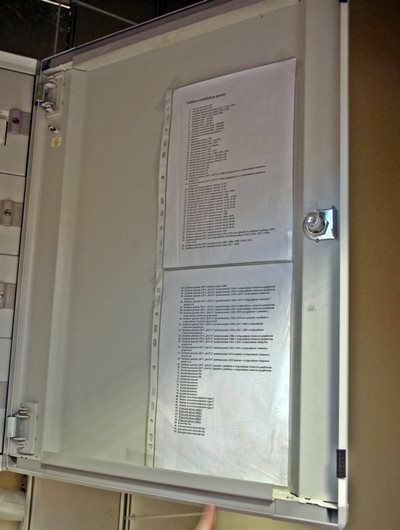

Instalacja elektryczna to pojęcie zbiorcze
Na instalację elektryczną składa się nie tylko podstawowa instalacja prądowa, ale również:
- instalacja alarmowa
- instalacja domofonowa
- instalacja odgromowa
- instalacja RTV i UTP - czyli tzw. sieci strukturalne i instalacja kamer przemysłowych
Można by tak wymieniać dalej jednak przedmiotem tego artykułu będą podstawowe elementy instalacji elektrycznej w mieszkaniu, czy domu jednorodzinnym o charakterze mieszkalnym.
Zacznijmy od początku - przyłącze i rozdzielnia elektryczna
W instalacjach domów jednorodzinnych mamy do czynienia z przyłączami elektrycznymi na które składają się: skrzynka elektryczna, najczęściej w linii płotu ( w niej znajduje się licznik, zabezpieczenia przedlicznikowe, oraz zaciski przyłączeniowe) oraz przewód zasilający biegnący od skrzynki do rozdzielni elektrycznej w domu.
Rozdzielnia elektryczna gotowa do połączenia, w trakcie budowy domu.
W mieszkaniach bardzo często umiejscowienie zarówno licznika, jak i zabezpieczenia przedlicznikowego znajduje się wewnątrz, jednak częstą praktyką jest też montaż liczników przez elektryków na klatkach schodowych przy wejściu, w piwnicy lub w skrzynkach obok wejść do mieszkań.
Rozdzielnia elektryczna - to tak naprawdę serce instalacji elektrycznej, schodzą się tu wszystkie obwoody zasilające. W nowoczesnych rozdzielniach elektrycznych znajdują się:
- Wyłączniki nadmiarowo - prądowe, często potocznie zwane "esami"
- Wyłącznik główny
- kontrolki faz
- Wyłączniki różnicowo - prądowe
- Szyny zaciskowe do przewodów zerowych i uziemień
- zabezpieczenia przepięciowe
- dzwonki montowane na szynę DIN
- zegary sterujące oświetleniem lub ogrzewaniem - czasowe, zmierzchowe lub astronomiczne
- Styczniki - często będące elementem sterowania oświetleniem lub ogrzewaniem
Oczywiście obecność poszczególnych elementów zależna jest od budowy instalacji, jednak na pewno niezbędne jest pierwsze pięć elementów listy.

Na zdjęciu wyłączniki nadmiarowo - prądowe i styczniki oświetlenia.
Reszta instalacji - poza rozdzielnią elektryczną
Na resztę instalacji oraz inne główne koszty składają się przede wszystkim:
- przewody zasilające
- przewody uziemiające
- puszki elektroinstalacjyjne do wyłączników i gniazdek
- osprzęt elektryczny - wyłączniki, gniazda, lampy, oprawy oświetleniowe
Całą resztę - czyli to co wychodzi z rozdzielni elektrycznej - trzeba czymś przymocować się do kosztów materiału na pewno trzeba liczyć tradycyjny gips budowlany, czy też specjalne uchwyty na przewody. Wszystko zależne jest od technologii kładzenia tynków w mieszkaniu, wykorzystanego materiału do budowy ścian, itd.
Omówiliśmy te podstawowe elementy instalacji elektrycznej w mieszkaniu. Często elektrycy będą wykorzystywać dodatkowe elementy, przydatne w danym przypadku, dlatego też to im - osobom z uprawnieniami warto powierzyć wykonanie i doradzenie poprowadzenia instalacji elektrycznej w Państwa czterech kątach.
Opis rozdzielni elektrycznej, to jedna z rzeczy o których elektrycy lubią zapomnieć. Z perspektywy czasu, dobry opis rozdzielni jest bardzo wartościowy dla użytkownika.
Artykuł ma charakter poglądowy i nie może być traktowany jako źródło wiedzy wykorzystywane do rzeczywistych napraw czy prac przy prądzie elektrycznym, ani wniosków teoretycznych mogących prowadzić do błędnych decyzji. Ponadto upomina się, że wszelkie prace związane z prądem elektrycznym, oraz wszelako pojętą instalacją elektryczną, powinny wykonywać osoby do tego uprawnione, z odpowiednim wykształceniem kierunkowym, wiedzą i zaświadczeniami.
Przyczytaj więcej o instalacjach elektrycznych, klikając tutaj.